IRON MAN & IRONHEART
- Jarvis
- Natalie

Von GitHub Copilot bis zu LLM-basierten Anwendungen
Dr. Blasius Lofi Dewanto
KI in der Softwareentwicklung: Ein Überblick
KI – LLMs – KI-Agenten – Agentic AI
Übergang von Papier- oder manuellen Aufzeichnungen zu digitalen Daten
Straffung von Prozessen mit digitalen Werkzeugen
Prozessautomatisierung, RPA* und einfache KI-Werkzeuge zur Effizienzsteigerung
KI-gestützte Erkenntnisse zur Unterstützung der Entscheidungsfindung
Autonome Agenten, die planen, handeln, zusammenarbeiten und Ergebnisse optimieren
* RPA: Robotic Process Automation
brauchen LLM
LLM(Large Language Model)
„Deep Dive into LLMs“ – Andrej Karpathy
Video ansehen: YouTube Linkhttps://youtu.be/7xTGNNLPyMI?si=lPrCfWlPBsH8lHa3
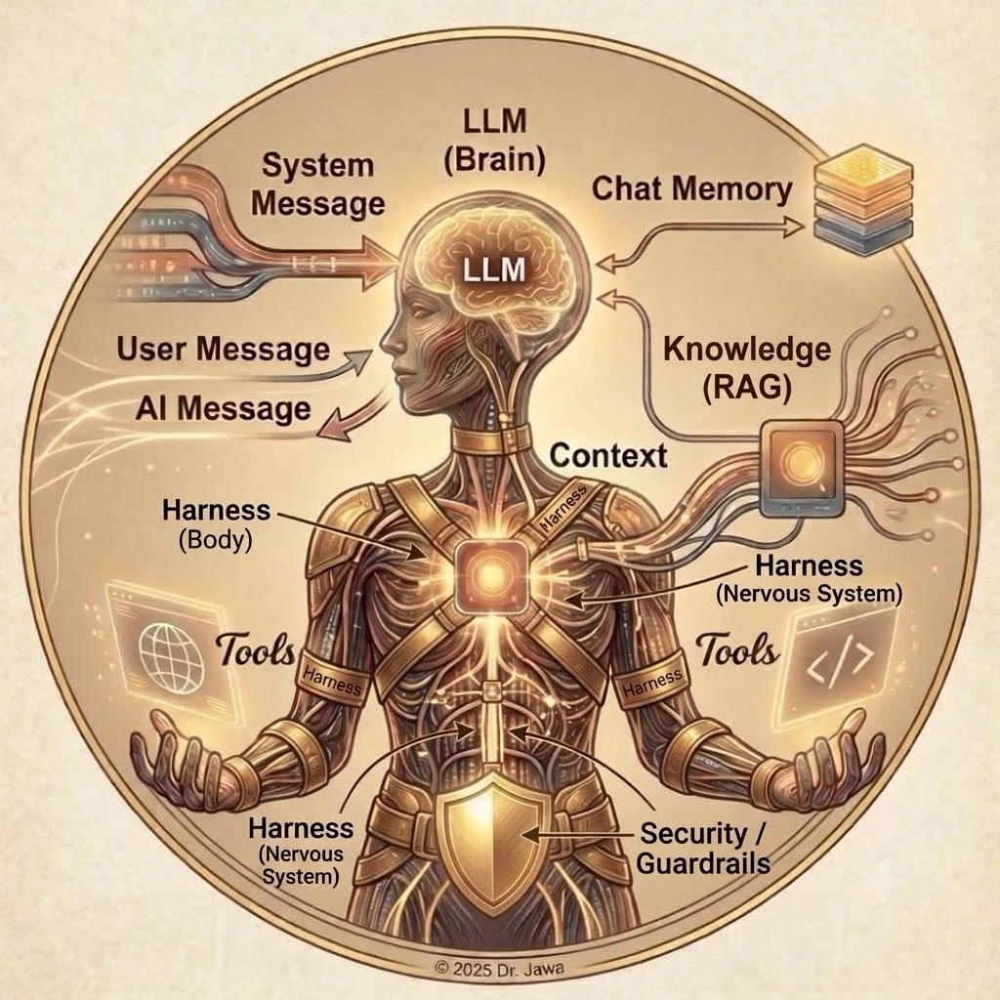
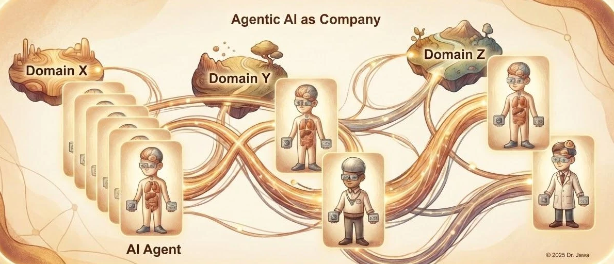
→ Jarvis für uns
https://openclaw.aiFacebook / Reddit für KI-Agenten
https://www.moltbook.com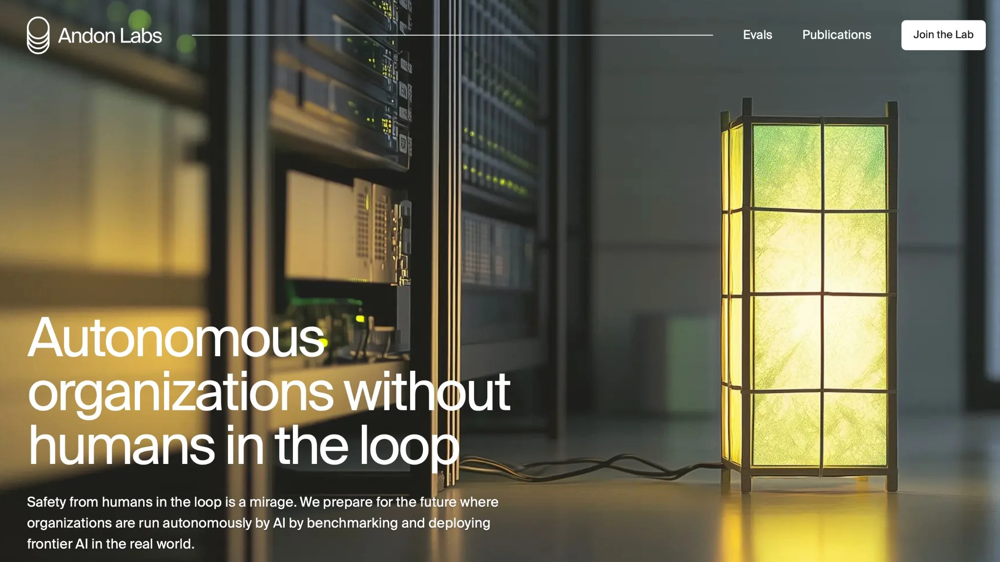
Versatile & Safe AI Assistant
anthropic.com/product/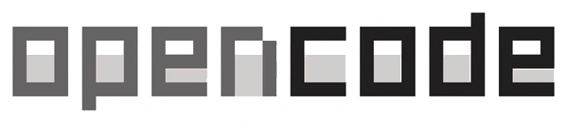
Open-Source Code AI
opencode.aiAI Coding Partner
github.com/features/Powerful Text & Chat AI
openai.com/de-DE/index/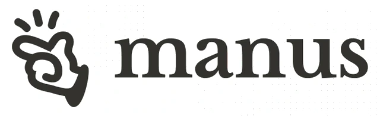
Workflow & Task Automation
manus.imGoogle's Advanced LLM & App
gemini.google.comScalable AI for Enterprise
openclaw.aiJava based Agent
clawrunr.ioAgent Task Organizer
paperclip.ingCustomizable Workflow AI
get-hermes.ai... und viele weitere...
GitHub Copilot – OpenCode
https://lofidewanto.medium.com/software-development-macro-and-micro-process-d90b10bd635a
Specify: Anforderungen, Motivation, technische Rahmenbedingungen & Constraints festlegen.
Plan: Architektur und technische Strategie definieren: Welche Technologien, welche Schnittstellen, welche Patterns, wie integriert das Ganze?
Tasks: Den Plan in kleine, umsetzbare Arbeitspakete unterteilen – so dass jedes Teil isoliert getestet oder reviewt werden kann.
Implement: Die KI-Agenten oder Entwickler beginnen mit der Umsetzung, wobei sie sich strikt an Spezifikationen und Tasks halten.
https://github.blog/ai-and-ml/generative-ai/spec-driven-development-with-ai-get-started-with-a-new-open-source-toolkit - https://github.com/github/spec-kit
Imperativ
vs.
Deskriptiv
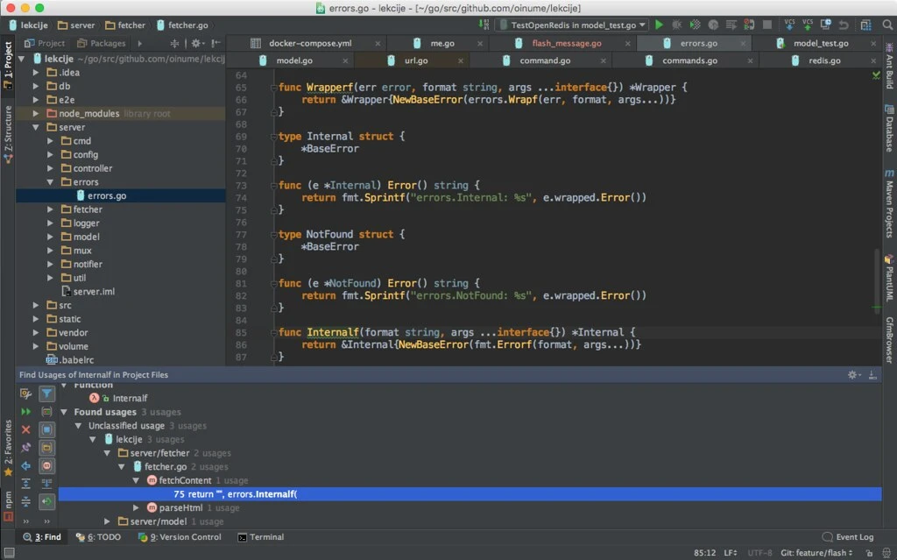
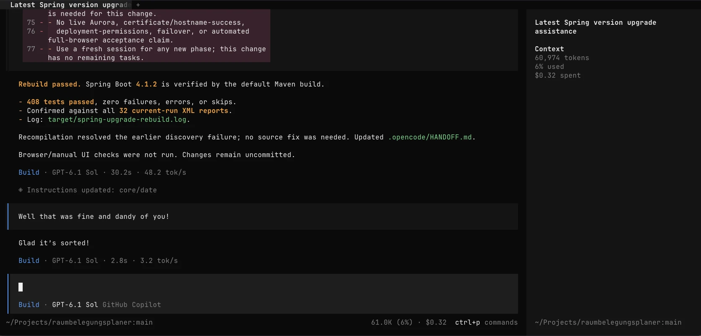
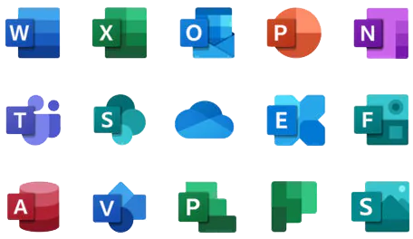
CLI / Desktop
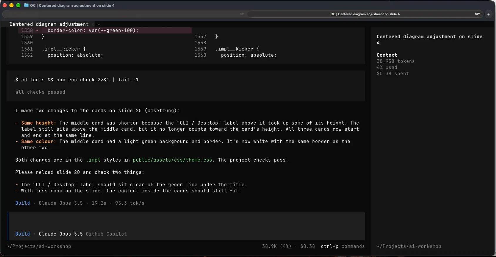
Example Agents
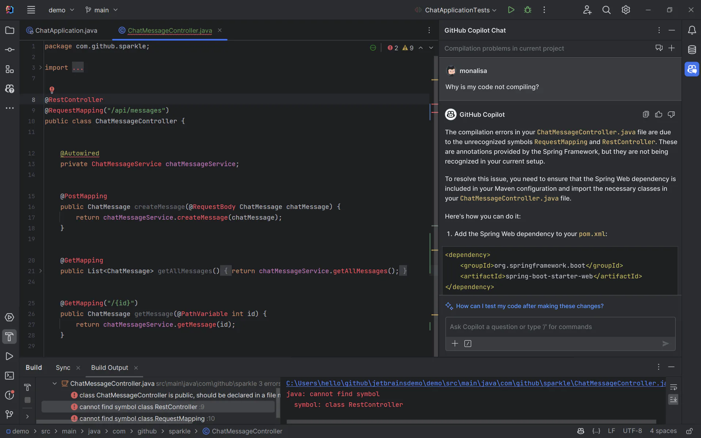
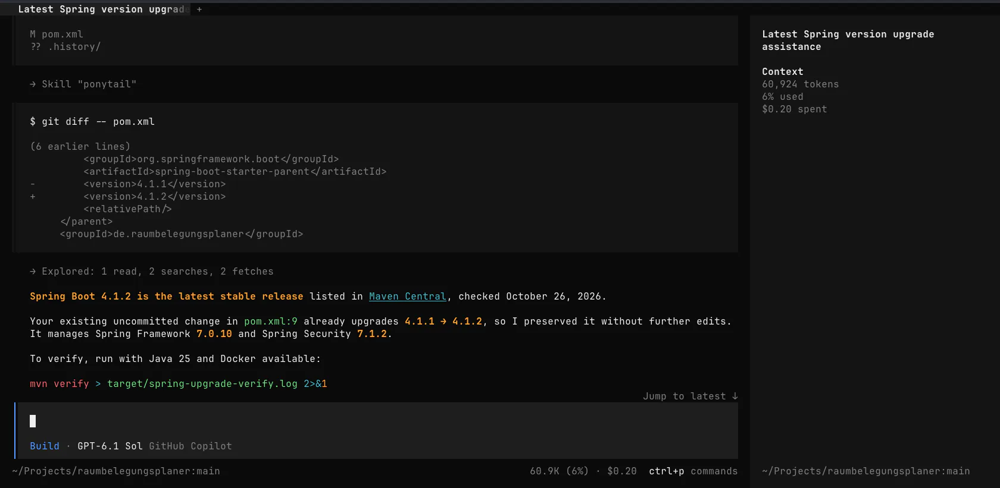
Von punktueller Assistenz zum durchgängig KI-gestützten Softwarelebenszyklus
KI erklärt Code und liefert Ideen. Menschen übertragen die Ergebnisse manuell in die Entwicklung.
KI erzeugt Code und Tests direkt im Projekt. Menschen steuern einzelne Änderungen und prüfen sie.
Versionierte Spezifikationen, Pläne und Tasks leiten die KI. Akzeptanzkriterien machen Ergebnisse prüfbar.
Agenten setzen spezifizierte Tasks um, testen und korrigieren iterativ – mit begrenzten Rechten und Reviews.
KI verknüpft Anforderungen, Entwicklung, Tests und Betrieb. Betriebsfeedback fließt in die Spezifikationen zurück.
Eigenes Orientierungsmodell, kein Standard. Auf allen Stufen: menschliche Verantwortung, Prüfung und Freigabe.
KI-Agenten können alles tun, wozu wir befugt sind. – logisch.
Daten löschen, Systeme verändern.
Anwendungen herunterladen, installieren.
... praktisch alle Systemoperationen durchführen!
Wenn das nicht gewünscht ist, müssen ihre Rechte entsprechend eingeschränkt werden.
/Users/kevin/proj
bidirectional sync
claude / gemini / codex
+ CLI, mvn, npm, …
private, nested
makes Testcontainers work
policy-as-code · MITM for known services
lives on the host, outside the microVM
OS keychain
host-side
Quelle: https://gist.github.com/kiview/cd11a5f6793d05c55ab0affa62d2b8c8
KI-Agenten nicht zu stoppen
Wir nutzen sie sinnvoll und bewusst!
Basis hierfür…
Sicheres Entwicklernotebook! (DevSecOps Notebook)
Kontrollierte Übergänge zwischen Agent, Host und externen Diensten
Vereinfachte Sicherheitsgrenzen; auch lokale LLM-Provider sind möglich. Pfeile zeigen die Zugriffsrichtung, keine pauschale Freigabe.
Ein starkes KI-Agenten-Duo
Wrapper für Sandbox-Lösungen wie sbx, OpenShell und nono.
(Eigenentwicklungen)
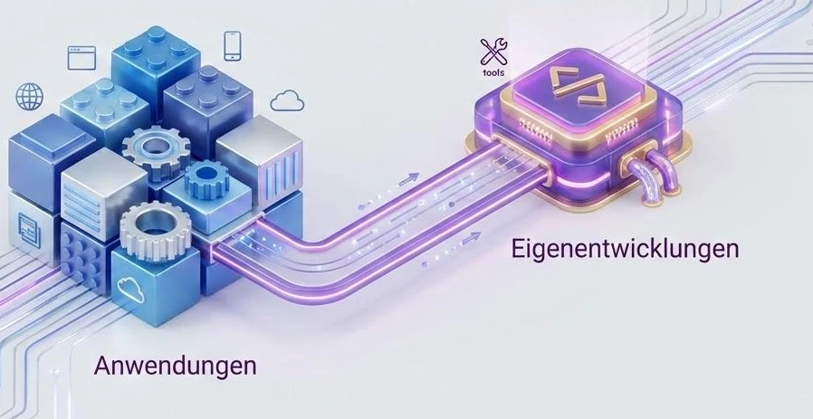
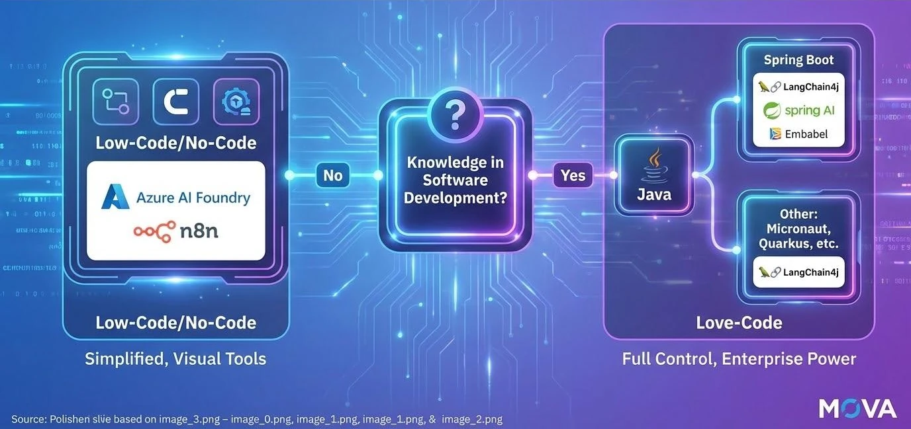
Deine eigenen KI-Agenten mit Java und Spring Boot sowie Spring AI bauen!
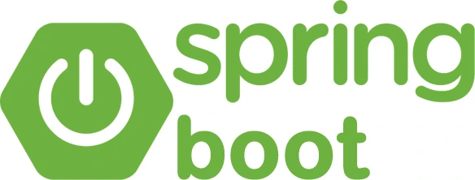
Pfeiltasten wählen · Enter öffnet · Esc schließt